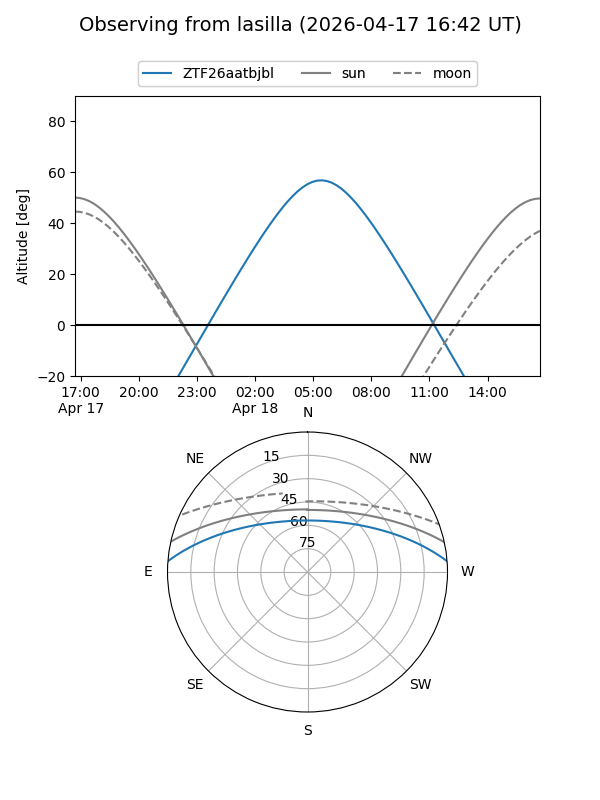
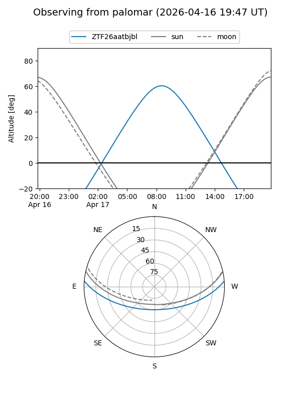

ZTF26aatbjbl
Target ZTF26aatbjbl at 2026-04-17 10:03
Aliases and brokers:
FINK: link
Lasair: link
ALeRCE: link
alt names
ZTF26aatbjbl (ztf,fink_ztf)
Coordinates:
equatorial (ra, dec) = 216.3731,+3.98549
equatorial (HMS+DMS) = 14:25:29.55,+03:59:07.77
galactic (l, b) = (351.1802,+57.75850)
Flags:
Photometry:
last ztfg=18.52
1 ztfg detections
Lightcurve
Visibility


Additional plots